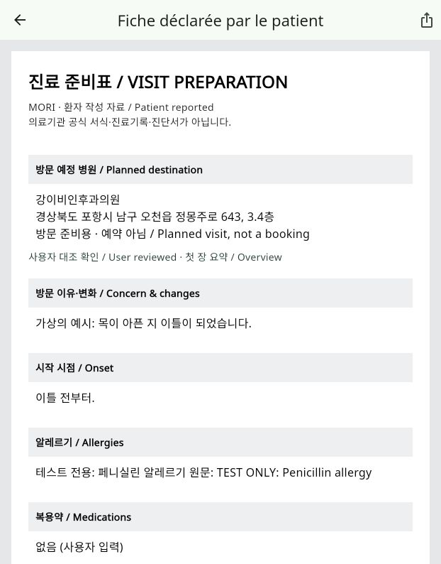

최신 제출 MVP — 2026-11-08앱38/서버28 테스트, 웹/iOS 빌드 통과. 병원 선택→프랑스어 가상 증상→실제 번역→대조 확인→병원이 포함된 준비표 표시 확인. 친구·워치·접속 집계는 제출 화면에서 제외. 아래 초기 캡처는 변경 전 이력입니다. 최신 화면은 실제 앱에서 확인하세요.
최신 앱 열기
MORI · 실제 화면 QA / 2026-11-08
처음 들어온 사용자가
의료진에게 설명하기까지
긴급·일반 선택 → 부위·진료과 탐색 → 병원 선택 → 로그인 → 건강정보·증상 입력 → 원문 저장 → [AI 번역·확인: 추가 검증 통과] → 의료진용 준비표 → 방문 경험 공유
실제 실행 화면으로 만든 모음입니다. 한국어 UI에서 영어 가상 증상을 입력했습니다. 웹 1280×720 기준이며, 실물 휴대폰 QA나 제품 출시 검증은 아닙니다. 이미지를 누르면 원본 크기로 볼 수 있습니다.
실제 앱 처음부터 직접 체험 →
현재 공백
가상 자료로 실제 AI 번역·확인·준비표 표시 추가 검증 완료 · 웹 PDF 다운로드 완료 미확인 · 실기기 GPS/Google 지도 인증 미검증 · 언어 전환 이번 수동 QA 미완료.
발견한 UX: 가입 후 기본정보 화면이 흐름을 끊음 · 회원가입 화면에 CareBridge라는 옛 이름 잔존 · 일부 400 오류의 설명이 포괄적.